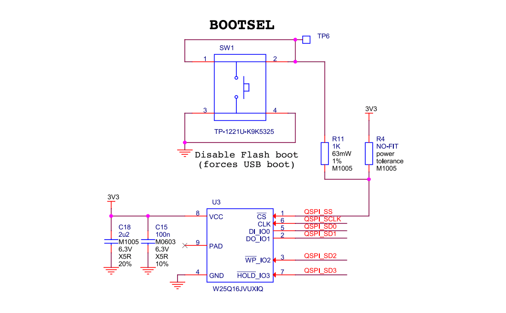
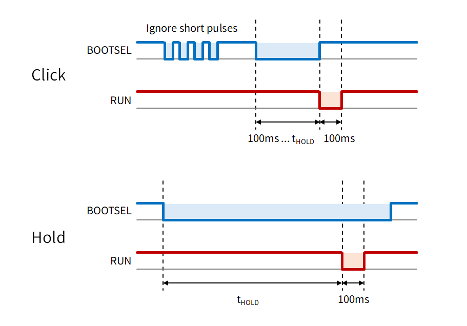

BootSel2Reset: ラズピコの BOOTSEL をリセットと兼用にする
Raspberry Pi Pico に搭載されている BOOTSEL スイッチを使って リセットを行えるようにする MOD チップ的なものを作ってみました。

動機
「長押しで書き込みボタン」 を作って以降、ラズピコを購入したらまずこのボタンを追加するのが 個人的にルーチンワークになっています。
長押し書き込みボタンは便利なんですが、毎回複数の部品を取り付ける作業が 地味にめんどいので既存の BOOTSEL スイッチを使って同様の機能を実現する MOD チップ的なものを作ってみることにしました。
BOOTSEL スイッチ
BOOTSEL スイッチは QSPI Flash の CS 信号に接続されています。 リセット解除時にこのピンが Low にドライブされている場合、 ラズピコは USB マスストレージモードで起動するようになっています。

この信号は RP2040/RP2350 が Flash にアクセス時にも Low にドライブされるので、BOOTSEL スイッチの押下と区別するには パルス幅で判別する必要があります。
リセットパルスの生成
以下のような仕様でリセットパルスを生成します。
- BOOTSEL の 100ms 未満のパルスは無視
- BOOTSEL の 100ms～tHOLD のパルスでは立ち上がりでリセットパルスを生成
- BOOTSEL の立ち下がりから tHOLD 経過したらリセットパルスを生成
これにより長押し書き込みボタンと同様に 「クリックでリセット」と「長押しで書き込みモード」を実現します。

MOD チップの実装
使い慣れた AVR に実装することにしました。
コードは pico-bootsel2reset に公開しています。ATtiny10、ATtiny85、ATtiny402 に対応しています。
AVR へ書き込み
MCU に合ったプログラマとツールを使って書き込みます。
- ATtiny10, ATtiny85: AVRasp, AVRISP mkII, Arduino など
- ATtiny402: UPDI 対応のプログラマ
ATtiny10 へ書き込むにはプログラマのファームウェアの更新が必要な場合があります。
筆者は AVRISP mkII と CH340E を使った自作の UPDI プログラマを使い、 ツールは avrdude を使用しました。
設定ピン
長押しのホールド時間 (tHOLD) はデフォルトでは 4 秒ですが、 TIMESEL ピンを GND に接続することで 500ms に変更できるようにしました。
一部の特殊なアプリケーション (PicoPad のブートローダ) で QSPI_SS が数百 ms の間 Low にドライブされることがあり、クリックと誤認されてリセットが実行されてしまうので、クリックについては NOCLICK ピンを GND に接続することで無効化できるようにしています。
ラズピコへの取り付け
裏面に実装する場合は BOOTSEL は TP6 に繋ぐのが簡単です。 表面に実装する場合はちょっと狭いですが BOOTSEL スイッチの端子に直結します。